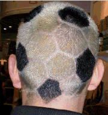

Dr. Dobb's Journal January 2008
If you caught my trip reports from the Symbian Smartphone Show in London, you already know that I took a couple of wrong turns at the exhibit hall and ended up first at a hairdresser's convention, then at a "food-to-go" conference.
As for the hairdressers, all I can say is that London hairdressers are a lot more stylish than their programmer counterparts. Of course, my approach to hair ("short on the sides, flat on the top") didn't do much to tip the scales in programmer's favor.
I've been playing catch-up since arriving home, mainly with the mail I've received about stuff I've said. For instance, Brian Farquhar reminded me why there's a dearth of litter bins in Central London—terrorism. Thanks Brian, I knew that, but just forgot.
|
 |
Then Jeremy Wilson wrote in regard to something I said about Fortran:
Your article on Fortran certainly takes me back. My first opportunity to write programs for a mainframe was as a high-school kid back about 1976 doing "port-a-punch" Fortran in a lunch hour computer club. It was called "port-a-punch" because the punch cards had prepunched chads that you could push out with a sharp point. There was a very limited range of characters available (just A,B, I, and J for letters, if I recall correctly). We had no computer in the school at that time, so after painstakingly punching out these things, we would hop on our bikes and take the deck of cards to a local bank in our little town (Blenheim, New Zealand). The bank then shipped them off to a computer at the main office in another city. About a week later we would return to pick up the printouts and excitedly check the output (or lack of). Not quite interactive, but this approach certainly encouraged careful checking! Fortunately, the school eventually got a TI programmable calculator with a little card reader and printer, on which I wrote a Star Wars game. A huge step forward from the punch cards. Ah, those were the days...
Hmmmm, now is that a '70's version of "mobile computing"?
And my article on graphical passwords led Bill White to ask how you prevent someone from viewing your password when you're drawing it, since just about anyone can draw, say, a butterfly. Well Bill, my understanding is that "Draw A Secret" (DAS) technology also captures drawing speed and pen pressure (among other things), not the image alone.
Note I said "just about anyone" can draw a butterfly. Lynn Garren is the exception: "You've got to be kidding!" she wrote, "I can barely draw a circle." Me too, Lynn.
Stan Sieler was kind enough to share some perspective on Draw A Secret technology:
History repeats itself, probably without knowing! Back about 1981 or so, I arranged a demo at Hewlett-Packard, Computer Systems Division for a guy who had an interesting similar invention. He had a graphics pad attached to an HP 2648A terminal, plus software that would allow you to make penstrokes as your password (he suggested using your signature, but any drawing would work). He captured the speed, pressure, direction, and used that to compare it to prior drawings/signings. The system worked, but we weren't in a position to do anything with/for him, and I never heard from him again (I doubt I even have his name recorded anywhere, unfortunately). I'd arranged the demo because I was chair of the first computer security task force within HP.
But Dave McClelland's approach to passwords is what I'd call a "hybrid DAS":
I draw a simple image using the keyboard [by tapping] in a pattern twice—one time with the Shift key down. When my password must be reset, I move my starting point over one key to the left or right. A small pattern leaves room for over 100 sequences without repeating. An interesting side effect is that I have to watch myself do the sequence to be able to know what the letters, numbers, and/or symbols are. If I forget anything, it is the starting point for the pattern—and I simply move over one position. Some phone numbers lend themselves to this technique on telephone keypads. There was a phone company several years ago that used to advertise that you could use their long distance service by "dialing down the center."
Finally, by the time you read this, I'll be on my way to or from China for a Dr. Dobb's Software Development conference in Beijing. While I'm looking forward to this for any number of reasons, the real reason for this trip is to see how Chinese programmer hairdos measure up to Chinese hairdresser 'dos. Reports to follow.
Jonathan Erickson
Editor-in-Chief
jerickson@ddj.com